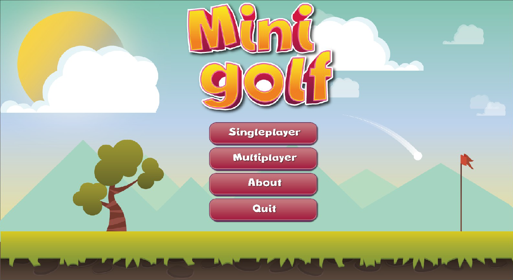
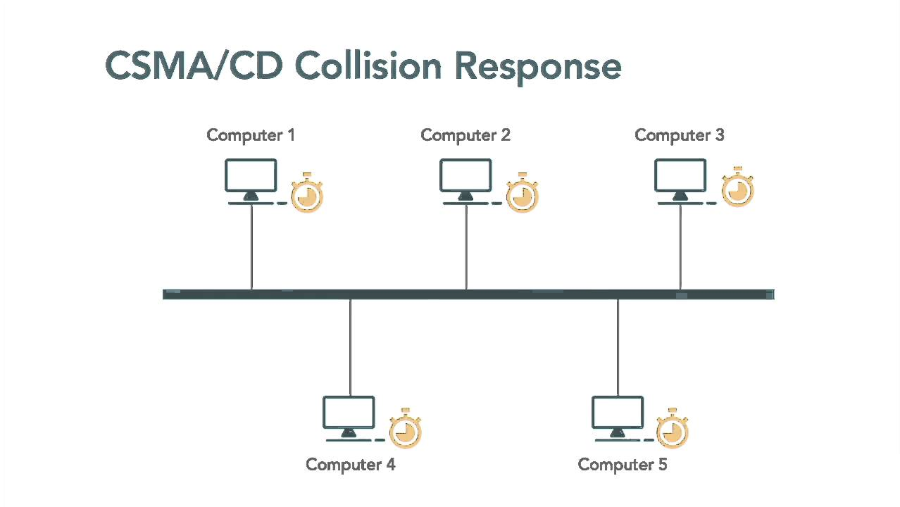
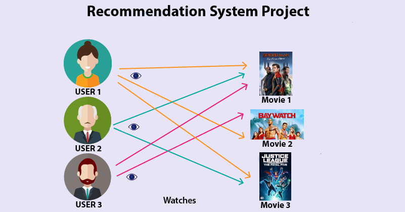

About Me
My name is Krzysztof Małczak. I am a student of Computer Science
at faculty of Fundamental Problems of Technology at Wrocław University of Science and Technology.
I am currently a student of the third year, working on my bachelor’s degree which I will hopefully get in 2022.
My hobbies are making airplane models, military and various sports.

Minigolf game written in Python using pygame and pymunk libraries.
May, 2020
CSMA/CD simulator

Carrier Sense Multiple Access with Collision Detection (CSMA/CD) algorithm implemented in
python as terminal application. It is used to broadcast packages and reduce the number of collisions from occurring on a shared collision domain.
May, 2020
Movie recomendation system

Movie recomendation system in python using scipy and scikit-learn libraries with usage of
cosine similarity.
March, 2020
Sorting
algorithms

Insertion sort, merge sort, quick sort, dual-pivot quick sort (count strategy) implemented in C.
December, 2019
Car dealership system

Java application for car dealers with SQL database using JDBC (Java DataBase Connectivity)
and Maven.
December, 2019
Game of Go

Go is an abstract strategy board game for two players, in which the aim is to surround more territory than the opponent. Client-Server application written in Java with Maven. Allows to play both single and multiplayer.